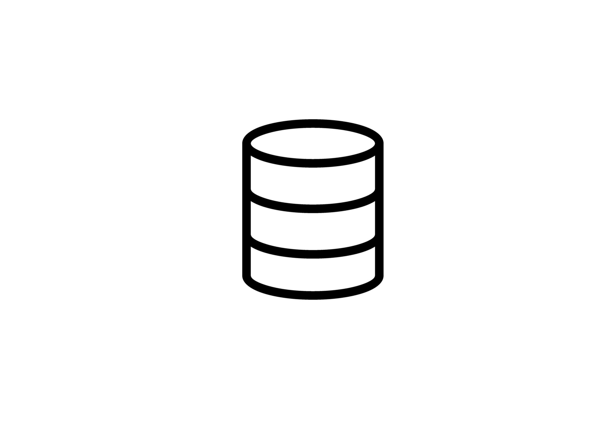
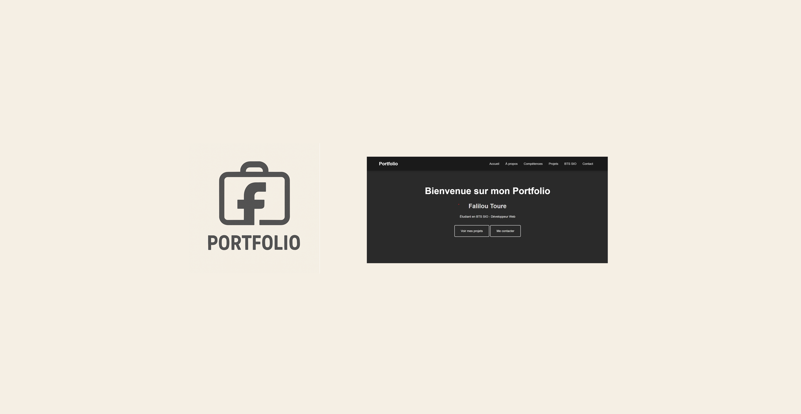

Projets Réalisés Durant ma Formation BTS

Base de Données Twitch
Conception et développement d'une base de données complète pour la gestion des streamers, viewers et statistiques de la plateforme Twitch.
Fonctionnalités :
- Modélisation conceptuelle et logique de la base
- Gestion des utilisateurs et des chaînes
- Système de suivi et d'abonnements
- Statistiques de streaming en temps réel
- Requêtes complexes et optimisation

BigPharma - Gestion de Stock
Application de gestion de stock pharmaceutique développée en Java avec interface graphique Swing pour une entreprise locale.
Fonctionnalités :
- Gestion complète des stocks de médicaments
- Suivi des dates d'expiration
- Système d'alertes automatiques
- Génération de rapports et statistiques
- Interface utilisateur intuitive
- Base de données intégrée

Portfolio BTS SIO
Développement de ce portfolio personnel pour présenter mes compétences et projets réalisés durant ma formation BTS SIO.
Fonctionnalités :
- Design responsive et moderne
- Présentation des projets et compétences
- Formulaire de contact fonctionnel
- Animations et effets visuels
- Optimisation SEO